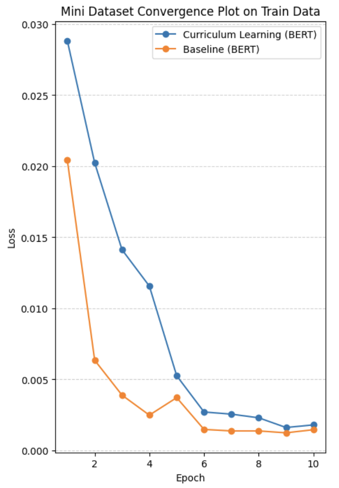
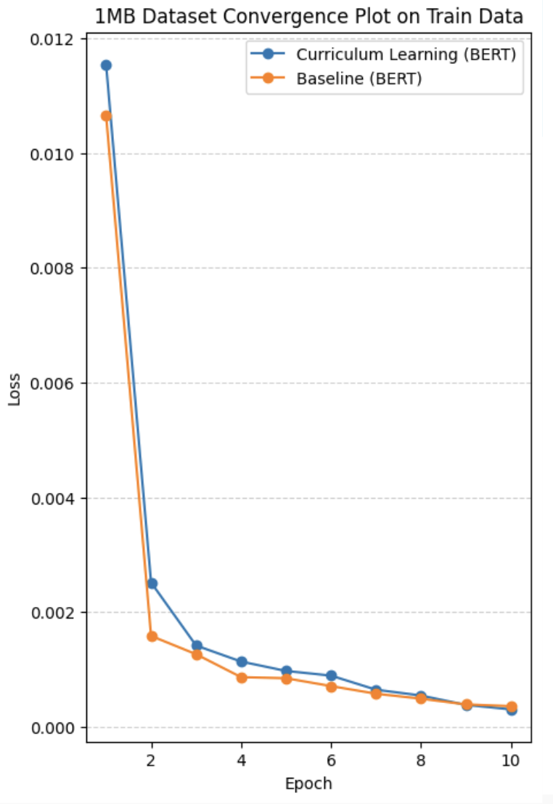

Can training deep learning models smarter — not longer — reduce loss and improve convergence?
We explored whether curriculum learning could improve training efficiency in transformer-based NLP models by progressively introducing harder examples and comparing convergence against a standard baseline.
Training deep learning models for NLP is computationally expensive and often requires many epochs to converge.
Can curriculum learning accelerate convergence and reduce training loss compared to traditional training methods?
We applied the Baby Steps method, where training data is introduced progressively based on difficulty. Difficulty was measured by text length — shorter samples were treated as easier, longer samples as more complex.
Large corpus of real-world questions and answers. Question and answer fields were concatenated into a single input. Entries with fewer than 4 words were removed.
Long-form text used for language modeling. Provided a rich, varied source of complex linguistic patterns.
Smaller controlled dataset used for rapid experimentation and verifying pipeline correctness before scaling up.

Mini Dataset — Curriculum Learning vs Baseline (BERT)

1MB Dataset — Curriculum Learning vs Baseline (BERT)
With larger datasets and longer training schedules, curriculum learning is expected to reduce required epochs, improve efficiency at scale, and enable more stable optimization. Future improvements could include: